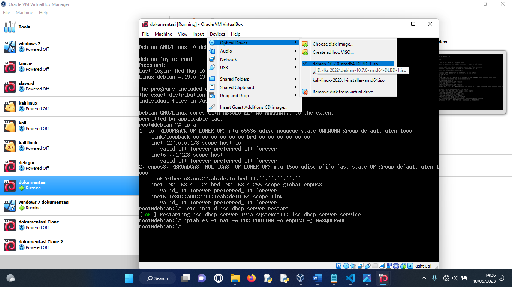
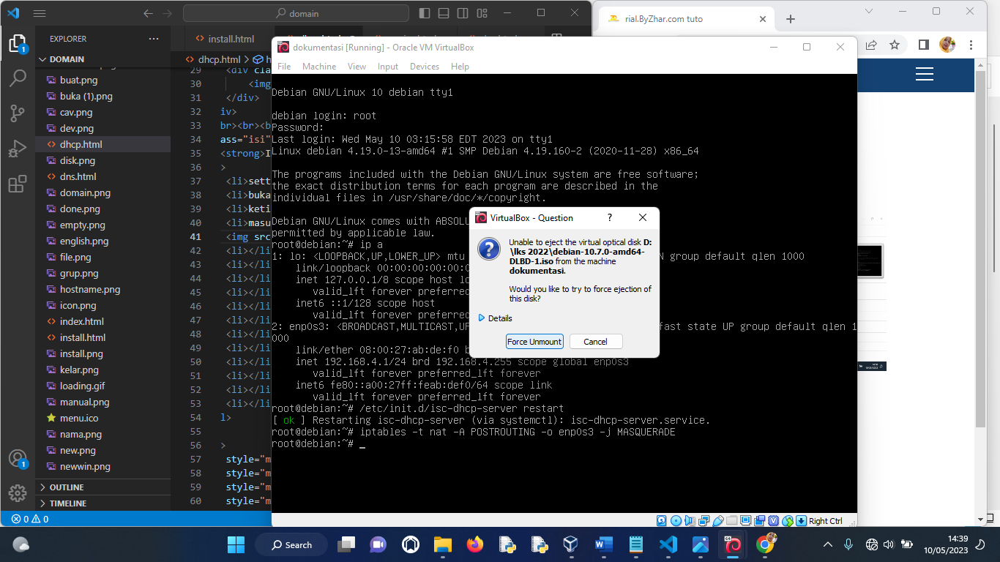
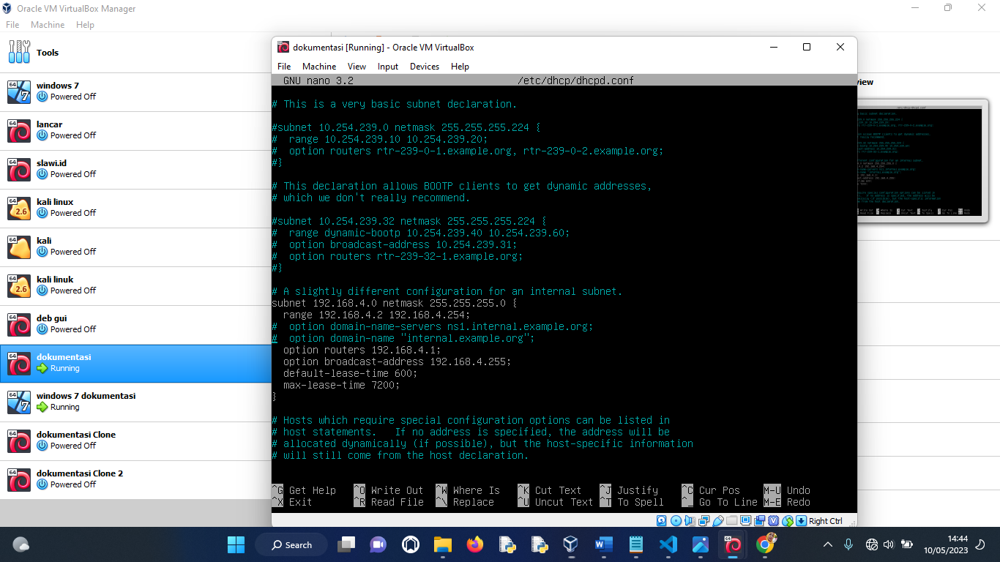
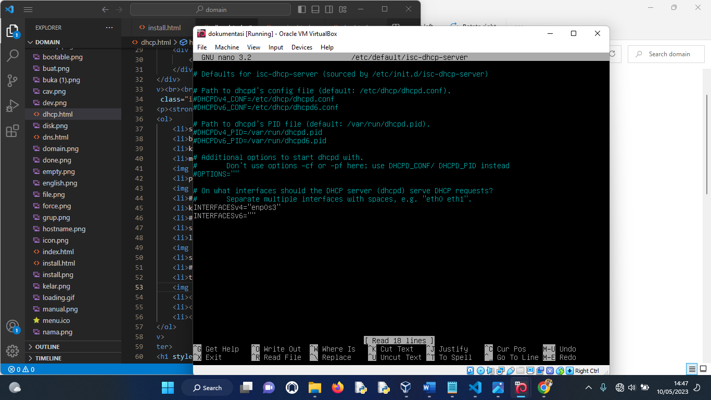
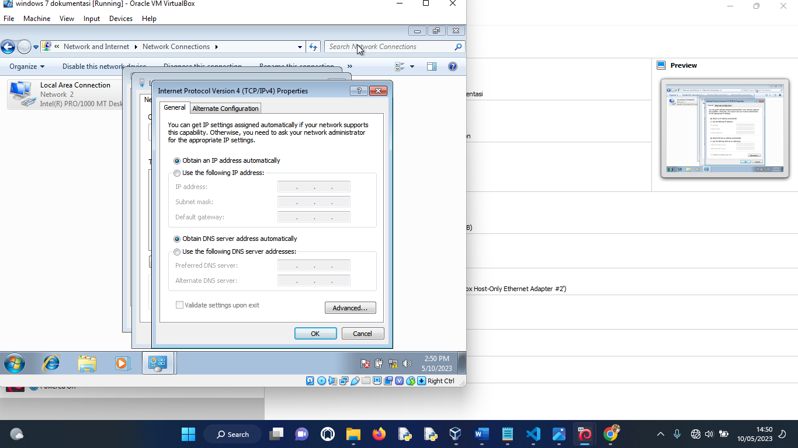

ZD|DHCP & NFS SERVER
HOME
INSTALL OS
DHCP & NFS
DNS & WEB SERVER
CA & MAIL SERVER
INSTALL DHCP SERVER
setting adapter menjadi host only
buka debian
ketik perintah #apt-cdrom add
masukkan dvd dlbd

pilih force unmount

#apt install isc-dhcp-server
ketik y
#nano /etc/dhcp/dhcpd.conf
scroll cari #A slighty
lakukan konfigurasi seperti di bawah

save
#nano /etc/default/isc-dhcp-server
tambahkan enp0s3 pada interfacev4

restart dengan perintah #/etc/init.d/isc-dhc-server restart
jika berhasil, maka buka windows 7
buka open network and sharing center
pilih change adapter setting
buka local area connection
pilih properties
pilih protocol v4
atur menjadi obtain

cek apakah sudah berubah ke network 192.168.4.0 atau belum
KONFIGURASI NFS SERVER ( SAMBA )
#apt install samba -y
pilih no
#cd /home
#mkdir samba
#chmod 777 samba/
#nano /etc/samba/smb.conf
scroll ke bawah, lalu konfigurasi seperti ini
membuat user dengan perintah #useradd smbusr1
beri password pada user dengan perintah #smbpasswd -a smbusr1
#/etc/init.d/smb restart
ke windows 7, dan buka windows explorer
ketik \\192.168.4.1 pada kolom pencarian di windows explorer
klik 2 kali untuk masuk ke folder samba, lalu masukkan usernam (smbusr1) dan passwordnya
selesai

.png)
.png)
.png)
.png)
.png)
.png)
.png)
.png)
.png)
.png)
.png)
.png)
.png)
.png)
.png)
.png)
.png)
.png)
.png)
.png)
.png)